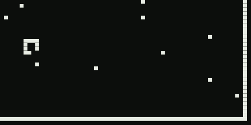
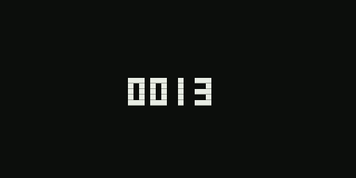

Death Trap
Mark Lipman · DREAMER no. 19 (1982) p. 3 1K RAM



A snake game in the style of Barrier: make your snake as long as possible while random dots keep appearing. Touching a dot, yourself or the border is fatal. The score is the snake length and any key restarts.
Keys
Speed 0-E or F (speeds up), then 8 left, 5 up, A right, D down.
Files
| File | Version | Load | Run |
|---|---|---|---|
| Death Trap.c8 | main | 0200-02DF | C000 |
Listing as transcribed (with notes): death_trap.txt
Source
DREAMER no. 19 on archive.org, p. 3 (PDF page 4). Author: Mark Lipman.
Corrections applied
None.
Open doubts
- The article gives the down-key address as 023E; the byte is at 023F.